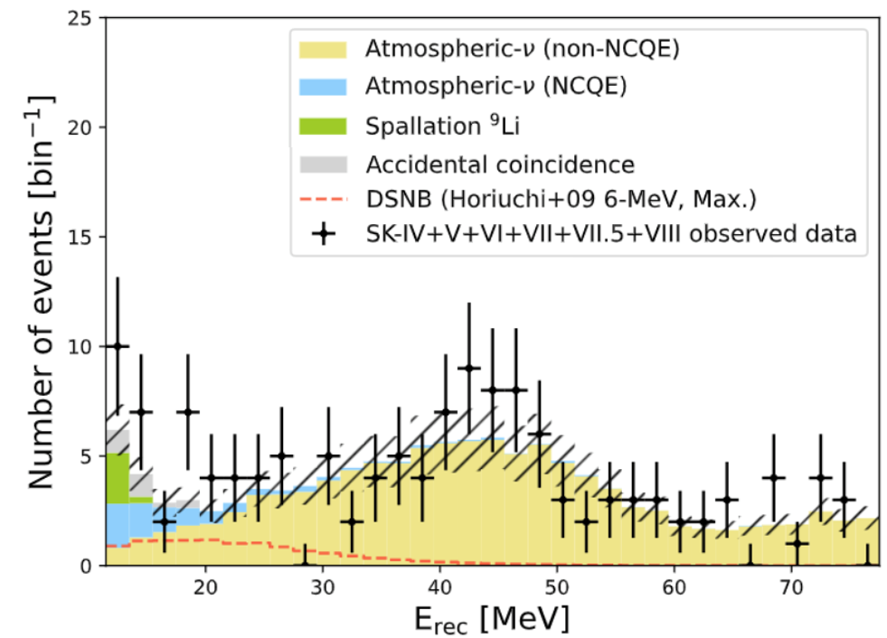
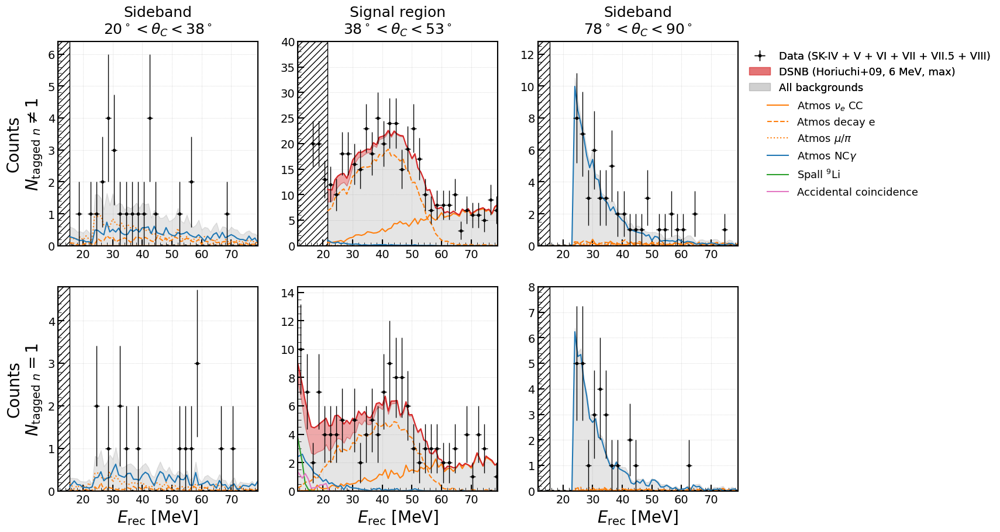
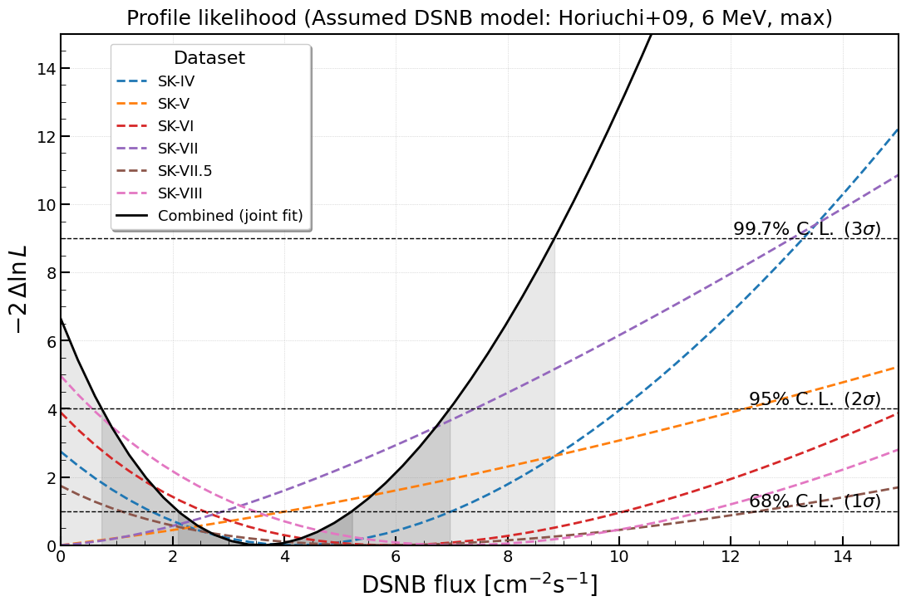
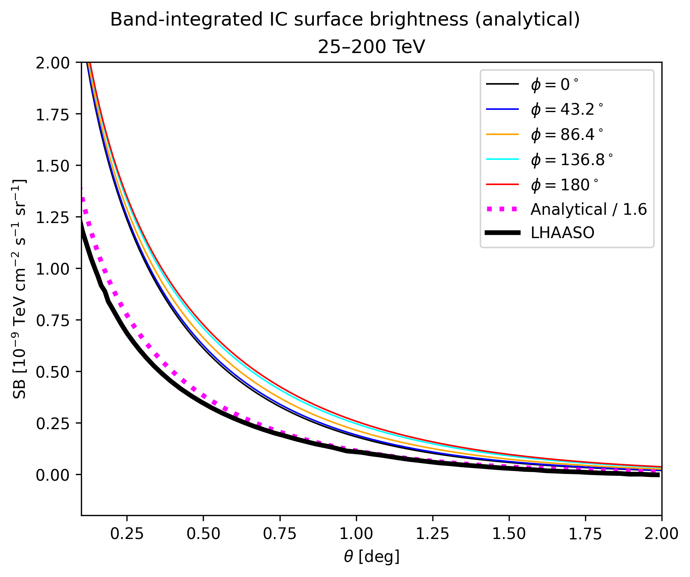
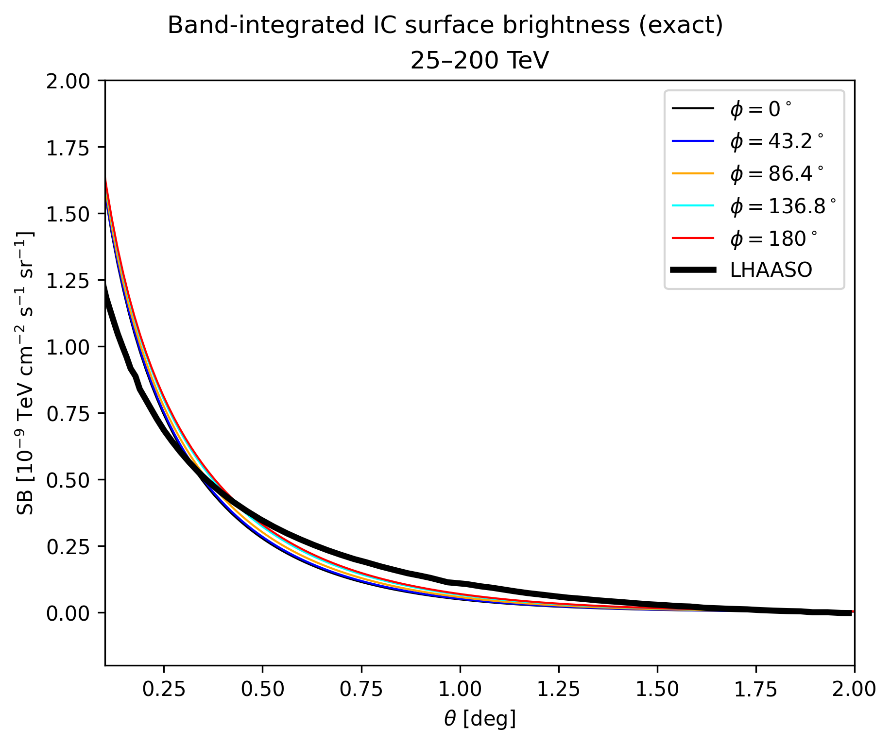
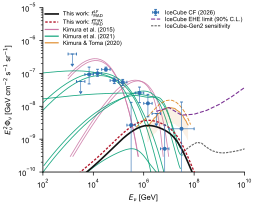
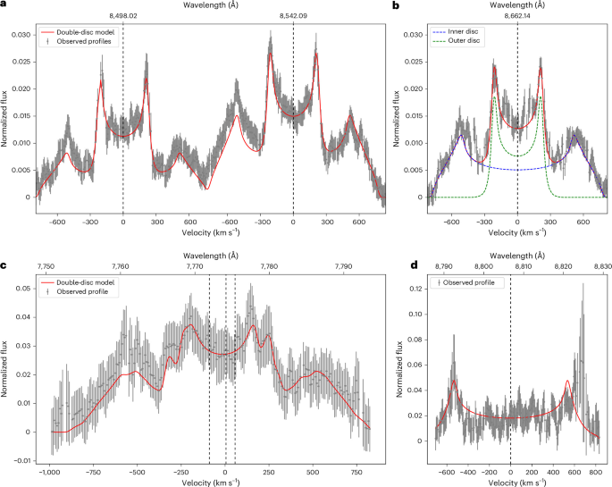

生成时间：2026-11-08T11:55:29+08:00
今日保留论文数：3
内容构成：今日新文 3 篇；补充推荐 1 篇；经典旧文精读 0 篇
阅读分层：重点精读 1 篇；相关简报 3 篇。精读依据科学贡献筛选，简报保留方法、结论及局限。
补充推荐论文数：1
数据源警告
- 本次有 3 个数据源访问异常；完整错误已保留在运行日志中，日报只显示摘要。
- arXiv API：2 个分类访问异常，候选池可能不完整；程序会基于已成功获取的数据继续兜底。
- 其他来源：1 个异常。
- 主要错误类型：限流 1 次；超时 1 次；其他 1 次。
高能天体物理重点
1. Indication of Electron Antineutrinos from the Diffuse Supernova Neutrino Background
- 来源：arXiv / astro-ph.HE
- 链接：https://arxiv.org/abs/2610.35619
- 作者：Kamiokande Collaboration, Abe, K., Asaoka, Y., Harada, M., Hayato, Y., Hiraide, K., Hung, T. H., Ieki, K.
- 公告 / 来源日期：2026-10-27
- 阅读层级：重点精读
- 评分：novelty 8/10，importance 8/10，relevance 9/10，final 9.35/10
- 推荐理由：Super-K 5003天暴露与大气背景抑制和谱拟合改进形成新的DSNB反电子中微子提示；2.6σ按提示报道，精读可解释数据和模型限制。
中文题目：Super-Kamiokande的5003天数据：超新星弥散反电子中微子的2.6σ迹象
做了什么：单颗近邻超新星的中微子暴很罕见，宇宙中历次恒星核心坍缩却会叠成持续的弥散超新星中微子背景（DSNB）。Super-Kamiokande将2008年10月至2026年3月的六个运行阶段合在一起，有效运行时间5003.0天、分析水靶22.5千吨。研究以反电子中微子在自由质子上的逆β衰变为信号，同时找即时正电子光与稍后中子俘获。纯水与掺钆阶段的标记效率不同；作者按Cherenkov锥角与标记中子数分为六个类别，利用背景主导类别制约大气中微子，并分别处理随运行阶段变化的偶然符合。
采用Horiuchi等的6 MeV参考谱形，联合谱拟合给出中微子能量高于13.3 MeV的积分通量 $3.6^{+1.6}_{-1.5}\,{\rm cm^{-2}\,s^{-1}}$，零信号受到2.6σ的单侧张力。两种其他谱形给2.6—2.7σ；不预设具体DSNB谱形的低能计数检验则为1.8σ。两种分析使用重叠事件，不能合并为两个独立证据。这是有针对性的信号迹象，尚不足以确认发现，也没有独立测出宇宙超新星率或失败超新星比例。
为什么重要：从单次暴到宇宙平均的关键困难不是水靶看不见MeV正电子，而是大气中微子和宇宙线散裂能产生相似的即时信号，偶然甚至真正伴随中子。本文同时推进了曝光、钆捕获效率、核退激背景抑制和谱统计控制。在低能段纳入更纯净的单中子样本、同时主动放弃不可靠背景的部分其他样本，说明更强约束来自可控的信号信息，而不是把所有低能事件都收进来。它给未来积累数据提出了可复查的基准。
理论 / 观测 / 仪器方法价值：可复用的是把分类、侧带与系统量联合起来：即时锥角和击中时间区分粒子拓扑，延迟中子做第二层标记；同一探测器在不同阶段保留各自响应，再用共享通量参数联合。系统量不能都当作一个独立误差条：中子效率变化会让事件在标记类别之间迁移，而偶然符合和锂9仅在一类中拟合，需作率或谱形改变。实际设计类似检验时要保存分类响应、标定数据与各类事件谱，不能从最终图的柱高直接重做似然。
为什么应该关注：对多信使天文，这里的MeV反电子中微子反映坍缩核心热过程，与IceCube看到的TeV至PeV高能中微子产生机制不同。可借鉴的是在很弱的弥散信号中，把背景控制区、探测器升级和模型依赖分层呈现。下一步最能改变判断的是更大的掺钆曝光、对核退激和散裂同位素的独立测量以及其他探测技术交叉验证。只有更可靠的谱形和归一后，才谈得上从背景反推坍缩人口与黑洞形成比例。
展开详细解读：文章讲解、背景、理论、重点章节、图表与相关工作
文章详细讲解
科学问题。 传统超新星中微子观测寻找某个方向某几秒的集体暴发。DSNB不同：每一次远处坍缩都太弱，宇宙许多时期的事件叠起来后才成为近似各向同性的持续流。本文问的是预期的反电子中微子谱能否解释探测器里稀少而稳定的一类事件，并不试图把某个候选分配给一颗已知超新星。
观测与辨认。 逆β衰变产生即时正电子和一个中子；两次信号应在时间和空间上相容。纯水里中子可在氢上俘获，延迟光较弱；钆使俘获更快且释放多伽马级联，提高标记能力。六阶段包含纯水、0.011%及0.033%质量分数掺钆，还包含磁补偿线圈故障期，因此不能把5003天都视为同一探测效率。作者用各期模拟和标定，将不同响应折进同一个物理通量。
如何减背景。 大气中微子在氧核上的中性流反应可打出中子并产生核退激光；由多个Compton电子组成的光图样有别于单正电子。作者用重建Cherenkov角、多重散射质量量和50 ns内最大击中数训练判别。与旧选切相比，这一步的信号保留率由79%升到89%，剩余中性流准弹性事件比例由10%降到5%。另以额外击中簇的时间和强度区分μ衰变电子与钆俘获，避免旧 veto 把真中子扔掉。宇宙线散裂的锂9会真产生β加中子，需要单独建模，不可仅靠延迟标记排除。
关键结果。 低能计数检验只用一个标记中子和中角区，在重建能量11.5—29.5 MeV与背景伪实验比较，得到1.8σ。主分析改用六类的逐事件能量和更宽谱段，拟合一个跨期共享DSNB率与六类背景，在基准谱下得到2.6σ。掺钆、纯水阶段单独拟合分别约2.2σ、1.4σ，通量在误差内相容；联合值来自一起剖面化共享背景与各期响应，不能用简单加法拼出。
局限与下一步。 主结论依赖给定的信号谱族及背景模拟；相近的三个谱模板给相近显著性，并不意味着数据已经自由量出谱形。未标成一个中子的低能段有残余散裂疑点，作者提高门槛作为保守选择。2.6σ也不是信号为真的后验概率。对新增掺钆数据，应检查相同的背景抑制和迁移约束能否稳定复现；更精细的宇宙坍缩推断还需要更大统计和独立谱信息。
关键结果是怎么做出来的
第一步分清曝光。纯水SK-IV与V合计3349.3天；掺钆VI、VII、VII.5、VIII合计1653.7天，得到5003.0天有效时间。钆浓度从0.011%增至0.033%后，钆俘获比例由约一半增至四分之三，纯水/低钆/高钆阶段的中子标记效率约10—30%、40—50%、60—70%。即使纯水时间长，对最纯信号类别的贡献也不能按天数直接换算。
第二步把背景从可观测特征中拆开。中性流核退激光常给过大的表观锥角或低的环形质量，带电流μ产生的衰变电子可在即时窗内形成另一个簇。作者用独立T2K束流样本校验与中性流相似的拓扑，将该类率不确定度由70%缩至45%；以SK测得的中子多重性修正模拟。中子效率另有镅铍标定，因此不能把通过选切的数值当理想探测器效率。
第三步选择能区与侧带。重建Cherenkov角分20—38度、38—53度、78—90度，再按一个或非一个标记中子划六类。反电子中微子集中在中角带，低、高角各两类以背景为主。一个中子类别降门槛至11.5 MeV；非一个类别升到21.5 MeV，以避开纯水低能散裂建模偏差。按基准谱估计，合并这些改动牺牲13.9%的总预期信号，但在更纯的单中子类别内的比例由42%提高到60%。
第四步看不预定DSNB谱的计数证据。先用重建29.5—79.5 MeV区间缩放大气非中性流准弹性分量，再看11.5—29.5 MeV一个中子中角区。图1的灰带是预期背景总误差，个别2 MeV箱的p值不能择优当发现。合计计数在变化背景的伪实验中对应p=0.036、约1.8σ，说明只用低能数量时的证据较弱。
第五步看谱拟合如何增加信息。图2把显示用2 MeV箱的事件与七个模型成分叠放，实际似然未作能量分箱。大气电子味带电流高能上升段、μ衰变电子隆起、可见μ/π低角区及中性流核退激高角区有不同形态。它们连同锂9及偶然符合的率、迁移、谱形不确定度一起处理，侧带给背景额外约束。表3中联合大气背景尺度多在名义值约1.1—1.2，不代表系统不确定度消失。
最后读图5通量剖面与表3。基准谱联合值 $3.6^{+1.6}_{-1.5}\,{\rm cm^{-2}\,s^{-1}}$ 对应作者所报拟合率每年约4.8；这一率与仪器响应、能阈定义相关，不等同于每年数出了4.8个确证事件。换Kresse或Ashida谱显著性相近；积分下限改为17.3 MeV时基准归一对应约 $1.8^{+0.8}_{-0.7}\,{\rm cm^{-2}\,s^{-1}}$，与旧掺钆分析相容。旧、新样本重叠，不能当作独立确认。
展开背景、理论、公式、模型和章节导读
背景知识
核心坍缩将恒星内核压到核密度并释放引力结合能，大部分能量以所有味的中微子和反中微子带走。SN 1987A让人看到单次近邻事件；在宇宙尺度，一次次更远事件无法单独辨识，累积形成弥散背景。其谱同时受坍缩率、谱温度、味演化和宇宙红移改变。此处只测反电子味的特定能段，不等于测全味总能量。
水Cherenkov探测器记录带电粒子在介质中发出的光，不直接看见中微子。反电子中微子与水中的自由质子作用后，正电子几乎立即出光，中子热化后被俘获才给延迟信号。相对于少数只见单一电子光的反应，这对符合能降低偶然背景。不过一次候选仍无法被标上唯一粒子来源，真正的结果来自人口统计。
钆的作用在于高热中子俘获截面和较亮的俘获级联。纯水掺钆前后不能简单用一项效率概括：不同捕获介质、阈值、光学与电子学状态都会改变中子识别。作者保存六个响应，结合独立标定；钆改变的是信号识别概率与背景构成，不是反电子中微子本身的天体流量。
能量窗由竞争背景决定。低能段有宇宙线μ在氧核上散裂的β衰变和偶然符合，高能段有大气中微子；锂9即使通过真中子要求仍可伪装。若仅提高全部事件阈值，会损失大量DSNB；若降低所有阈值，可能把不可靠散裂谱拟成信号。分类型阈值是本文增益与谨慎并存的地方。
弱信号研究的“迹象”“灵敏度”和“发现”不同。2.6σ描述数据与所采用零信号模型的单侧张力；伪数据注入得到的中位灵敏度是分析设计的性能；谱通量置信区间描述在指定响应和假设下可估的参数。它们不能互换，尤其不能将某个显眼能段的局部波动解释为整个宇宙背景已测定。
基础理论 / 方法脉络
正电子与中子带来的两类信号有不同作用。正电子的即时光量近似给动能，逆β运动学把它换成中微子能量；俘获信号用来挑更纯的类别，而不能提供同等精度的中微子能量。探测器报告的 $E_{\rm rec}$ 是按单电子或正电子重建的动能，11.5 MeV可见阈对应约13.3 MeV中微子能量。
三种谱形作为输入而非从低计数数据自由重建。模型先给到达地球的通量能谱，再由逆β截面、有效质子数、能量分辨率、选切和标记概率转成各期各类的事件强度。中微子能量越高截面通常越大，所以归一相同的两个谱也不产生完全相同的计数；报告积分通量时必须同时写阈值和谱形。
在理想条件下，中子俘获等待时间近指数分布。钆不仅缩短平均等待，也产生较易见的伽马级联。时间窗足以容纳大部分俘获，不代表实际标记效率接近100%；光阈、空间关联、神经网络选择和偶然率都参与。标记效率变化使事件从一个类别流到另一个，不能把各类别误差全当独立。
主拟合用背景丰富区和信号区共享部分参数。大气与散裂过程有跨期相关的率和系统量，偶然符合及某些信号响应随期变化。合用能谱与侧带后，模型需同时解释总事件数、每类的能谱和跨期变化，不能只对中角低能的一处起伏调整自由背景。
拟合时让通量从零向正值变化，对每个固定通量重新调整允许的背景参数；这种剖面似然会降低把背景误差当信号的风险。比较零值与最优值可以量化张力，但在非负边界、有限计数与模型误差下，应采用论文报告的统计口径。低能计数与谱拟合是同一数据的互补检查，非独立实验。
公式与推导
下面把论文的反应、事件选择和扩展似然连起来。论文给出逆β运动学和剖面统计量，未逐式写出全部似然实现；中间的表达式是按所述方法作教学展开，不代表重跑了原始事件或使用作者未公布的协方差。
1. 反应与重建能量。 逆β衰变在自由质子上给出
忽略MeV区核子反冲，$E_{\rm rec}$ 是正电子动能的重建估计；若用正电子总能量，换算只差约1.3 MeV。区分这两种能量定义，才能正确读图1阈值和最终报告的积分流量下限。
2. 用谱形和一个积分归一描述信号。 令 $f(E)$ 为基准谱的形状，在指定阈上归一：
这是对固定形状拟合的教学写法。$\phi$ 的单位为 $\rm cm^{-2}\,s^{-1}\,MeV^{-1}$，$\Phi_{>E_0}$ 是积分单味流量，$u$是积分能量。6 MeV是所用源谱模型设定；本次主要拟合归一，不能把此值读成新测温度。
3. 从流量到每期事件谱。 以 $a$ 记数据期、$r$记分析类别，响应折叠可示为
$T_a$是有效秒数，$N_p$是22.5千吨水内的自由靶质子数，$\sigma_{\rm IBD}$用平方厘米，$\epsilon$包含接受效率，$G$为对接受事件的重建能量响应密度，$x=E_{\rm rec}$。积分后的 $s_{ar}$ 是每MeV的预期计数；不能直接把所有曝光乘一个统一效率。
4. 捕获时间的作用。 忽略死时间和光选择、给定平均俘获时间 $\tau$，教学近似为
时间密度量纲为倒时间。$\tau$从纯水约200微秒降至高钆水约60微秒，说明延迟窗可以收下较快的钆捕获；原文用完整535微秒记录和实际分类标定，而非直接把此解析概率当中子标记效率。
5. 迁移与归一的区别。 若某成分在一角带中总预期为 $B$，标成一个中子的有效概率为 $p_1$，则
这是固定总数、同一能量口径下的教学示例；实际两个子区采用不同阈值，要先考虑接受区间。它解释为什么共享中子效率会关联两个类别。只在单中子区建模的锂9和偶然符合没有另一区可迁移，论文把这一系统量作为归一项。
6. 信号与六个背景在同一事件空间相加。 令各背景形状 $b_{kar}$ 按该类接受区归一，期望强度为
$\boldsymbol\eta$统称率、迁移、谱形的干扰参数，$\mathcal W$为该类分析窗。$\lambda$是每MeV的事件数密度，$\mu$是该类期望计数；信号共享一个流量，而背景的若干系数跨期相关。角度侧带主要帮助确定背景。
7. 扩展无分箱似然。 原文方法可用点过程写法示意：
强度以相同的能量测度定义，似然比中的单位常数抵消。第一项使总数有约束，第二项使用每个事件的能量，末项表示作者对相关归一及系统参数的标定约束；实际有阶段共享和不同类型的参数映射。图2的2 MeV箱只为展示，不是这条似然的输入箱。
8. 剖面比较零通量。 图5展示的统计量等价写为
分子在固定通量下最大化干扰参数，分母是所有参数允许时的最大似然，$q$无量纲。每个通量点都要重新剖面，而不是冻结名义背景。图上的零通量值和曲线最低点给出论文所报2.6σ与通量估计；不能从简图自行重算显著性或增加独立试验次数。
9. 计数对照的尾概率。 低能计数法另构造背景伪实验，教学写为
$\mathcal G$是标准正态累积分布，概率无量纲。作者通过变化各背景的系统量建立 $N$ 分布，而非只用理想泊松近似；p=0.036相当于约1.8σ单侧。它用的是与谱拟合重叠但不相同的信息，和2.6σ不能作为独立项平方和。
模型拟合 / 应用方法
输入是5003天六期的逐事件重建能量、锥角与标记中子类别。IBD用SKSNSim，大气背景结合HKKM通量、NEUT相互作用和核退激模拟，探测器用SKG4。数据与模拟都走同一重建和选切；中子标记以独立镅铍源检查，各期标记数据/模拟差的系统量约3—10%。这套链说明响应不只是几何水体积。
六个背景是大气电子味带电流、μ衰变电子、可见μ/π、核退激伽马，以及散裂锂9和偶然符合。前四类的角带和谱形各异；以背景主导区和高能段提供控制。大气率的通量及截面不确定性、核退激率以及中子多重性按论文的归一或迁移参数处理；锂9另有由模拟和数据对照得到的残余谱形自由度。没有把每个箱都独立调成任意曲线。
主似然同时拟合六期，共享DSNB物理率和跨期相关背景；偶然符合与信号响应干扰量按期。信号归一可以浮动，截面、运行时间、靶体积和筛选的不确定性另保留约2.9—3.1%。表3给最佳尺度和拉动值，图5给剖面。分开运行期的曲线用作一致性检查，不代表额外独立发现。
稳健性检查之一是门槛。纯水未标成一个中子的15.5—21.5 MeV区用旧阈拟合时会把信号率推高约一个误差，原文认为更可能是残余散裂；本次全部阶段都排除该区。附录C在4040天的高钆伪数据中，组合新的背景系统处理及更低单中子阈后，预计的中位发现能力改善超过两倍；这是模拟设计比较，不是实测显著性翻倍。
另一检查是换谱与分期：三个形状得到约2.6—2.7σ，纯水和掺钆归一相容。依然无法靠此区分宇宙历史和每次坍缩发射的退化。未使用无法建模的低能段也意味着不能从当前谱图推断更低能真实背景。报告的是给定能阈与谱形的通量和零信号张力，不是对失败超新星比例的联合约束。
重点章节 / 结果段落怎么读
-
引言与探测器段：厘清DSNB与单次中微子暴、全味和反电子味；记录六期和不同钆条件，避免把5003天理解为均一掺钆。
-
方法与表1：依次读即时光、核退激识别、μ衰变和散裂锂9。注意分类效率改善与T2K、镅铍外部校验分别约束什么。
-
统计分析与附录B：对照六类、两种能阈、侧带及剔除散裂区。读懂纯度上升与总预期信号下降为什么可以同时发生。
-
图1、图2、表3及附录D图5：分别追低能计数、联合谱、参数与剖面。1.8σ和2.6σ所用假设与数据重叠，不能把p值加在一起。
-
讨论与补充图：比较替代谱、纯水/钆分阶段及历史通量时，先核积分能量下限，再看是否有共同事件；随后才讨论更大曝光的作用。
关键图表与解读
图1：单中子样本的低能计数对照

图注：一个标记中子的信号区：数据和预期背景的重建能量谱。灰色斜线带为预期背景的总不确定度，叠加名义Horiuchi等2009年DSNB模型作参照。11.5–29.5 MeV范围每2 MeV箱的纯背景p值依次为0.12、0.14、0.77、0.039、0.24、0.32、0.46、0.27和1.00。
怎么看这张图：不要挑最低的单箱p值当发现。论文还将完整低能范围的计数与背景伪实验比较，得到1.8σ；这与用所有类别的谱拟合不同。 展示少依赖信号谱形的直接计数证据。
来源与置信度：arXiv HTML；source verified；https://arxiv.org/html/2610.35619v1/figures/sk_ntag_12MeV_newlegend.png
图2：5003天联合谱拟合的六类事件

图注：5003.0天数据的DSNB信号及六个背景成分的最佳拟合谱。中央为中等Cherenkov角信号带，外侧列为背景主导侧带，两排区分中子标记类别。灰色为总背景，红色阴影为叠加的DSNB信号；数据按2 MeV分箱仅为展示，拟合按逐事件能量无分箱。中上图中21.5 MeV以下数据虽画出，但未使用。
怎么看这张图：比较中心与两侧，区分可以用侧带约束的大气背景与中角区的弱信号。注意两排最低纳入能量不同；图上显示出的点并不全进似然。 说明背景组成、能阈与联合谱统计如何支撑主结果。
来源与置信度：arXiv HTML；source verified；https://arxiv.org/html/2610.35619v1/figures/sk4_sk5_sk6_sk7_sk75_sk8_bestfit_combined_signal_stacked_2MeV_perpanely.png
图5：联合通量的剖面似然

图注：中微子能量高于13.3 MeV时，DSNB积分通量的剖面似然比。黑色实线为全部阶段联合拟合；彩色虚线为各阶段单独拟合，仅用于比较。纵轴为相对最佳点的负二倍对数似然变化。
怎么看这张图：读黑线在零通量处相对最低点的抬高。彩线共享联合分析中的事件，并不是六项额外独立检验；零通量张力仍只到2.6σ。 直接支持通量估计与零信号张力。
来源与置信度：arXiv HTML；source verified；https://arxiv.org/html/2610.35619v1/figures/sk4_sk5_sk6_sk7_sk75_sk8_nll_profile_combined_flux.png
强相关工作
Super-K的SK-IV纯水搜索已在2970天级曝光上开发中子标记、散裂抑制和谱约束；956.2天掺钆搜索覆盖VI与VII阶段。本文包含这两批的主体，并加入V、VII.5和VIII，且改了背景建模和分类门槛。比较时要承认数据重叠、能阈不同，不能把两个相似的通量数字当独立检出。
Horiuchi、Beacom与Dwek的DSNB计算将宇宙恒星形成与坍缩史、源端热谱联系到可测的弥散流量，也讨论了掺钆和低阈的意义。本文用其6 MeV形状作为一个参考，并比较两种其他预测，增加的是观测数据对归一和零信号的约束。通量幅度仍与源端谱、坍缩人口及宇宙史相互退化，不能用一致性直接反证任何一项历史模型。
同一事件 / 同类源线索：
相似工作：
基础理论 / 方法工作：
相反观点 / 张力线索：
（未提供）
相关简报
1. Analytical modeling of the gamma-ray morphology of TeV halos around moving pulsars
- 来源：arXiv / astro-ph.HE
- 链接：https://arxiv.org/abs/2610.34515
- 作者：Recchia, Sarah
- 公告 / 来源日期：2026-10-27
- 阅读层级：相关简报
- 评分：novelty 7/10，importance 8/10，relevance 10/10，final 9.40/10
- 推荐理由：把移动脉冲星均匀扩散的视线积分解析化，并给可比的近似模板与失效范围，适合LACT/TeV晕拟合；在已知输运框架内的明确增量，按简报。
中文题目：移动脉冲星的TeV晕：把视线积分化简为注入历史的一维积分
问题、方法与结论：脉冲星移动时，过去注入的电子和正电子留在旧位置，冷却较慢的低能粒子会使逆康普顿伽马晕偏向运动后方。作者从均匀各向同性扩散、连续注入和辐射损失的格林函数出发，解析完成视线上的高斯积分，保留观察者几何与能损，剩下一个沿注入历史的数值积分。源足够远、注入恒定且简化能损时，可再把时间积分近似成闭合模板。以LHAASO J0248+6021参数作示例，解析近似在远处和电子截止附近偏差增大。
意义与贡献：贡献是让移动源的能量相关形态更容易进入实际拟合，而非只拿球对称径向曲线吸收方向差异。完整视线积分比全空间网格便宜，仍保留历史注入；新结果是计算方法与误差范围，没有从现有天图重新测得扩散系数。
可借鉴之处：可先用精确投影生成分能量的电子面密度，再折叠目标光场和逆康普顿产生核，作为LACT等数据的形态模板。若试用全解析版，应先与一维积分比较。本文25–200 TeV示例中，解析曲线除以约1.6后形状接近精确计算，提示主要误差会进入注入效率。
局限与关注点：“精确”只针对所设均匀扩散与空间均匀辐射场，不自动覆盖两区、各向异性或不均匀靶场。示例无仪器点扩散函数卷积，也未拟合LHAASO数据；1.6不能作为其他源的固定校正。做真实观测时应同时比较能量相关PSF、背景和径向/方位残差。
图5：精确投影与解析近似的TeV径向剖面


图注：25–200 TeV逆康普顿表面亮度的径向分布，上为全解析近似，下为精确视线投影。颜色标示相对脉冲星运动方向的方位，另画LHAASO J0248+6021扩散模型的最佳剖面作参照。上图还显示解析强度乘1/1.6的曲线，说明差别以整体归一为主。作者未将预测与仪器点扩散函数卷积，也没有拟合LHAASO数据。
怎么看这张图：同色比较上下两图，先看随半径的形状，再看归一差距。除以1.6只是此组参数的检验，不能直接校正其他晕。 将计算近似的可用范围和观测拟合边界放在同一图组。
来源与置信度：arXiv HTML；source verified；https://arxiv.org/html/2610.34515v1/gamma_integrated_sb_radial_profiles_approx.png；https://arxiv.org/html/2610.34515v1/gamma_integrated_sb_radial_profiles_exact.png
2. PeV Diffuse Neutrinos from Magnetically Arrested Disks in Low-Luminosity Active Galactic Nuclei
- 来源：arXiv / astro-ph.HE
- 链接：https://arxiv.org/abs/2610.33548
- 作者：Wu, Fan, Dai, Benzhong
- 公告 / 来源日期：2026-10-27
- 阅读层级：相关简报
- 评分：novelty 7/10，importance 8/10，relevance 10/10，final 9.40/10
- 推荐理由：低光度AGN磁阻塞盘把质子能量预算、两种产生过程及人群叠加和IceCube相比较，给可检验的条件限上；占比与注入效率退化，按简报。
中文题目：低光度AGN磁阻塞盘的PeV中微子：IceCube约束的是占比与质子效率的乘积
问题、方法与结论：作者把低光度活动星系核（LLAGN）内侧约10个引力半径建成强磁的磁阻塞吸积流，求质子注入、冷却和逃逸，再算质子与气体或光子作用的多种衰变链。按黑洞质量和光度函数叠加人口，并采用低激发射电星系数密度作磁阻塞人口代理。在约千分之1.6的代理占比下，预测全味弥散谱于约1.5 PeV达峰，能量平方加权强度约为2.6×10⁻⁹ GeV cm⁻² s⁻¹ sr⁻¹，与采用的IceCube资料相容。
意义与贡献：实际推进是把吸积环境和一个人群约束相接：约5%吸积静质量功率给非热质子时，IceCube比较允许的这类源占比上限约千分之2.3。这个结果对有高产额的模型源族施压，但未识别任何单源，也未普查真实磁阻塞盘有多少。
可借鉴之处：可借鉴的是分解谱中不同过程：光致介子过程的π衰变主导峰，低能处气体碰撞更重要；高能π及μ冷却后，K衰变在模型尾部更显著。把各过程和粒子逃逸同时算出，再与分段谱、极高能限上及未来灵敏度分别比较，有助于设计可检验预测。
局限与关注点：占比上限与质子能量份额反比：份额更低可允许更多源。论文还假设占比不随质量、光度、红移变，采用无演化光度函数、固定半径、Bohm扩散及特定注入；低激发射电星系也不是磁阻塞盘的直接标签。Gen2曲线是预期灵敏度，不能写成已检出。
图1：磁阻塞盘人口预测与IceCube比较

图注：全味弥散中微子强度。黑实线和红点线是本文按光度函数代理的占比及允许最大占比分别所得预测。细洋红和绿色实线为Kimura等既有低光度AGN低效吸积流模型；橙实线和虚线为Kimura与Toma的磁阻塞盘预测。蓝色标记为IceCube全味联合分段谱，误差棒为报告的68%区间、向下箭头为上限；紫虚线为极高能微分90%上限，灰虚线是IceCube-Gen2预计灵敏度。
怎么看这张图：先区分蓝点与紫色上限，再看黑/红仅在同一模型内改变源占比。两条预测和数据相容不能证明源族已经测到，灰线也不是观测。 直接展示人口约束、模型预测与下一代可检验性。
来源与置信度：arXiv HTML；source verified；https://arxiv.org/html/2610.33548v1/a.svg
3. A double debris disc around a white dwarf sculpted by two planetary bodies
- 来源：Nature Astronomy
- 链接：https://www.nature.com/articles/s41550-026-03004-3
- 作者：Nicola Pietro Gentile Fusillo, Felipe Lagos-Vilches, Boris T. Gänsicke, Christopher J. Manser, Detlev Koester
- 公告 / 来源日期：2026-10-26
- 阅读层级：相关简报
- 评分：novelty 8/10，importance 7/10，relevance 7/10，final 8.30/10
- 推荐理由：四峰谱线支持双层气体残骸盘的新几何结构；隐含两天体为模型解释而非直接行星发现，需核退化与时间演化。
中文题目：白矮星周围的四峰谱线揭示双气体环，两颗残存天体仍是解释
问题、方法与结论：白矮星行星残骸盘中的气体如何产生并保持局域分布？作者对红外超额源WD J1328–1450进行2021—2023年的VLT/X-shooter光谱观测，发现钙和氧发射线有四个峰。用同心、共面圆环的开普勒运动模型拟合，钙线对应的两环约跨越0.14—0.34和0.54—1.93个太阳半径，约两年间线型稳定；镁线只显示内环。红外连续谱还要求考虑尘埃的垂向结构。作者提出两颗残存固体分别与尘埃作用产气，但并未直接探测到这两颗天体。
意义与贡献：此前已知21个气体盘都呈典型双峰，本例增加了必须解释的径向分区与持续产气约束。双气体环是线型证据支持的结构；两母体、母体不同化学组成或同一分异天体的不同层，则仍是解释层面的候选。它不能仅凭环数证明有两颗行星。
可借鉴之处：可借鉴的是把不同发射线的速度结构与宽带尘埃辐射联合约束。作者先固定白矮星质量0.47个太阳质量，再把双环线型与仪器响应卷积，用马尔可夫链蒙特卡洛采样钙线参数。氧线混合严重，固定钙线得到的倾角和系统速度；这让共享约束与较弱数据各自提供的信息边界清楚可见。
局限与关注点：圆环、共面和固定恒星质量均是模型条件，红外拟合的成分、粒径、尺度高度与半径高度退化。外环若有与内环相同的钙镁比，预期镁峰约高于连续谱6个标准差；这是条件性可检出性判断，不是两颗天体的发现显著性。后续密集光谱应检验周期变化及成分分区；目前也不能排除非均匀气体造成的峰高不对称。
图2

图注：图2：Ca II、O I与Mg I发射线的双盘模型拟合。a—d为X-shooter观测谱（灰点及1σ误差棒），以各谱线真空静止波长（黑色竖虚线）为参照显示速度：a、b为Ca II三重线，c为O I三重线，d为Mg I线。红线是最佳拟合双盘模型，参数见扩展数据表3。b另给出Ca II 8662 Å分量的内盘（蓝）和外盘（绿）贡献；内盘延伸到更大的速度，反映其较快的开普勒运动。峰高的轻微不对称提示略有偏心的轨道。c中O I 7774 Å三重线形态类似Ca II，但三分量混合使结构更复杂；这里也有不对称，提示内盘略有偏心。d中Mg I 8807 Å只在内盘中检出发射，其红翼数据误差较大。横轴为速度（km/s），上轴为波长（Å），纵轴为归一化通量。原图注将目标写成WD J1338–1450，与正文WD J1328–1450不一致，此处保留核验说明。
怎么看这张图：先看b中宽的蓝色内环与窄的绿色外环如何叠加成四峰，再对照d缺少窄镁峰。图注的偏心暗示不等于偏心已确定：正文指出无进动证据，并认为非均匀气体更可能造成峰高差。d红翼误差大，不能逐点追随噪声。 同一原图展示双环线型证据、内外环分解与Mg差异，是核心论证。
来源与置信度：Nature HTML / paperfig strict；source verified；https://media.springernature.com/lw685/springer-static/image/art%3A10.1038%2Fs41550-026-03004-3/MediaObjects/41550_2026_3004_Fig2_HTML.png
说明
评分由 LLM 给出初评，再由本地阈值策略过滤；IACT、TeV 伽马射线和高能中微子天文学按重点方向处理。